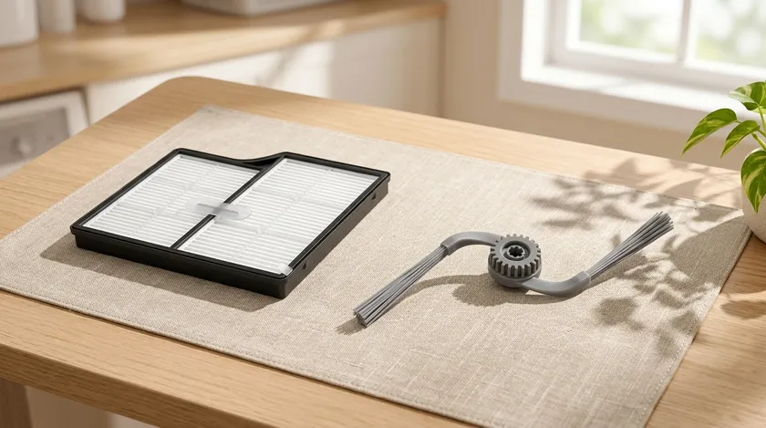
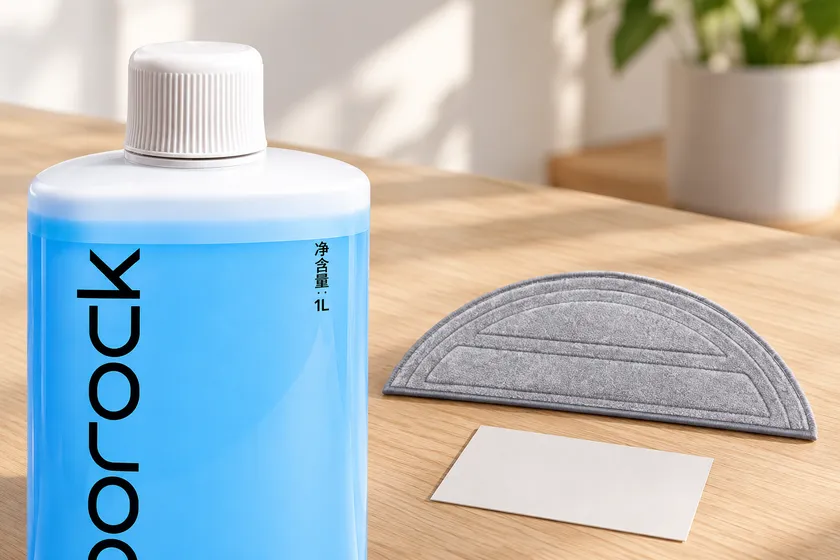

로보락 (Roborock)
로보락 S9 MaxV Ultra 필터 건조 교대 관리와 여분 기준 세트 고르기
글·구성: 제이상점 · 기종별 1:1 호환 실물 점검 · 교체 주기 비교표 · 스마트스토어 패키지 안내

핵심 관리 · 선택 체크포인트
- 먼지통 필터를 물로 헹군 날 로봇청소기를 바로 돌려야 할 때, 완전히 마른 예비 필터 하나가 서랍에 있으면 건조 시간을 기다리지 않고 교대로 장착할 수 있습니다.
- 남은 여분 수량으로 고르는 S9 MaxV Ultra 세트 기준: 모든 부품이 한날한시에 닳지 않기 때문에 현재 보관함에 무엇이 남았는지에 따라 세트 크기와 세제 포함 여부를 나누어 볼 수 있습니다.
- S9 MaxV Ultra 필터는 한쪽 모서리가 단차진 비대칭 프레임 구조이므로 S8·S10 계열 직사각 필터와 혼용하지 않도록 모델명을 꼭 대조해 주세요.
- 필터 그늘 건조와 도크 주변 수납 동선을 함께 정돈해요: 새 소모품과 사용 중인 부품을 섞이지 않게 두는 방법은 S9 MaxV Ultra 도크 주변 공간과 소모품 보관 자리 구분법을, 기간별 묶음 수량을 남은 여분과 비교하는 기준은 S9 MaxV Ultra 3개월·6개월·1년 세트 고르는 법을 참고하시면 도움이 됩니다.
- 교대용 필터가 1개뿐이라면 다음 세척 전에 여유분을 채워 두세요: 곡선형 사이드브러시 솔 끝 벌어짐과 필터 테두리 패킹 상태까지 살펴보았다면 로보락 S9 MaxV Ultra 호환 소모품 및 세제 선택 옵션에서 우리 집에 알맞은 구성을 확인해 보세요.
실물 부품 디테일 · 관리 구성 이미지


부품 규격 · 점검 기준표
| 현재 보관함 상태 | 검토하기 좋은 필수 옵션 | 관리 활용 팁 |
|---|---|---|
| 필터·걸레·더스트백이 모두 거의 소진됨 | 1년세트 (또는 정품세제 업그레이드) | 필터 2개 이상을 건조 교대용으로 두고 장기 수납 |
| 일부 여분은 있으나 걸레·필터 보충이 필요함 | 6개월세트 / 3개월세트 | 수납 공간을 적게 차지하면서 핵심 마모 부품 보충 |
| 전용 클리너 병만 넉넉히 남아 있음 | 1년·6개월·3개월｜세제 미포함 | 불필요한 세제 중복 없이 브러시·필터·걸레·봉투만 확보 |
💡 교체 주기가 겹치는 필터·브러시·물걸레·더스트백은 단품 배송비를 여러 번 내기보다 로보락 S9 MaxV Ultra 기간별 세트(3개월·6개월·1년)로 미리 구비해 두면 물세척 후 24시간 교대 건조까지 끊김 없이 관리할 수 있습니다.
자주 묻는 질문 (FAQ)
Q. 로보락S9MaxVUltra의 필터·걸레·더스트백이 모두 거의 소진됨 규격과 관리 기준은 무엇인가요?
A. 1년세트 (또는 정품세제 업그레이드) 규격을 사용하며, 필터 2개 이상을 건조 교대용으로 두고 장기 수납 기준으로 점검·교체하면 청소 효율을 안정적으로 유지할 수 있습니다.
Q. 로보락S9MaxVUltra의 일부 여분은 있으나 걸레·필터 보충이 필요함 규격과 관리 기준은 무엇인가요?
A. 6개월세트 / 3개월세트 규격을 사용하며, 수납 공간을 적게 차지하면서 핵심 마모 부품 보충 기준으로 점검·교체하면 청소 효율을 안정적으로 유지할 수 있습니다.
Q. 로보락S9MaxVUltra의 전용 클리너 병만 넉넉히 남아 있음 규격과 관리 기준은 무엇인가요?
A. 1년·6개월·3개월｜세제 미포함 규격을 사용하며, 불필요한 세제 중복 없이 브러시·필터·걸레·봉투만 확보 기준으로 점검·교체하면 청소 효율을 안정적으로 유지할 수 있습니다.
제이상점 1:1 검수 추천 패키지 · 구매 안내
메인 추천 구성
대표 구성 참고가 69,500원대 (옵션·쿠폰별 스마트스토어 결제 화면 기준)
1년세트1년세트｜호환세제→정품세제 업그레이드6개월세트6개월세트｜호환세제→정품세제 업그레이드3개월세트
☑️ 주문 전 확인해 두면 좋은 제이상점 안심 포인트
· 기종별 1:1 전용 규격 검수: 모델명·연식에 맞는 호환·정품 구성을 검수해 오주문 불안을 줄였습니다.
· 해외직배송 미리 주문 팁: 중국 구매대행·해외직배송 상품이므로 마지막 여분 1개를 꺼내 쓰는 시점에 개인통관고유부호와 함께 여유 있게 주문해 두시면 훨씬 경제적인 비용으로 끊김 없이 교체하실 수 있습니다.
· 기종별 1:1 전용 규격 검수: 모델명·연식에 맞는 호환·정품 구성을 검수해 오주문 불안을 줄였습니다.
· 해외직배송 미리 주문 팁: 중국 구매대행·해외직배송 상품이므로 마지막 여분 1개를 꺼내 쓰는 시점에 개인통관고유부호와 함께 여유 있게 주문해 두시면 훨씬 경제적인 비용으로 끊김 없이 교체하실 수 있습니다.
📖 더 많은 가정 내 사용 스토리와 상세 후기가 궁금하시다면
📱 네이버 블로그 모바일 원문 보기 ↗